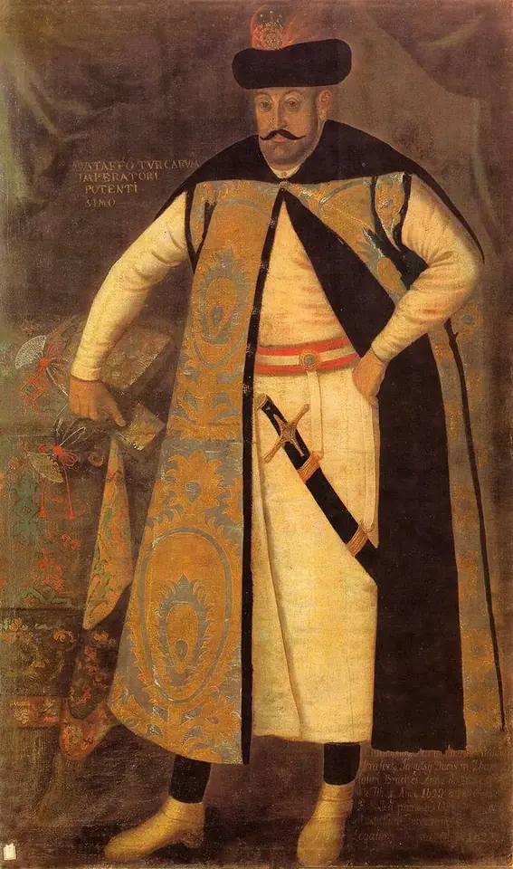

Envoys & Diplomacy
Site of the Elçi Han (Ambassadors' Inn)
Opposite the Column of Constantine most likely stood the inn that lodged the Commonwealth's great embassies: Prince Krzysztof Zbaraski in 1622 and, in 1677, Jan Gniński with a suite of 450.


- Theme
- Envoys & Diplomacy
- District
- Fatih
- Period
- 1622–1678
- Visiting
- No longer exists
The story
When Jan Gniński, envoy of King Jan III Sobieski, rode into Istanbul in August 1677 with a suite of 450 people and 650 horses, he was assigned the same inn where Prince Krzysztof Zbaraski's embassy had lodged half a century earlier.
It was almost certainly the Elçi Han, the Ambassadors' Inn, built in 1509–1512 by Grand Vizier Atik Ali Pasha beside his madrasa and opposite his mosque, on the site of the old Forum of Constantine. For about a century and a half the Ottomans lodged envoys from Central Europe here; the Habsburg ambassador Busbecq lived in it for years.
How to visit
Get off the T1 tram at Çemberlitaş and stand by the Column of Constantine. A few dozen metres to the west, on the same side of the avenue, is the Gazi Atik Ali Pasha Mosque, built by the inn's founder. The Elçi Han stood across the tram tracks, facing the column, in the block between Atik Ali Pasha's madrasa and the end of Peykhane Caddesi, now shops and offices. There is no plaque: tell the story from the foot of the column, looking along the street the embassy processions used.
People
- Jan Gniński
- Krzysztof Zbaraski
- Kara Mustafa Pasha
- Atik Ali Pasha
Location
Fatih, Istanbul · Coordinates: 41.00817, 28.97119